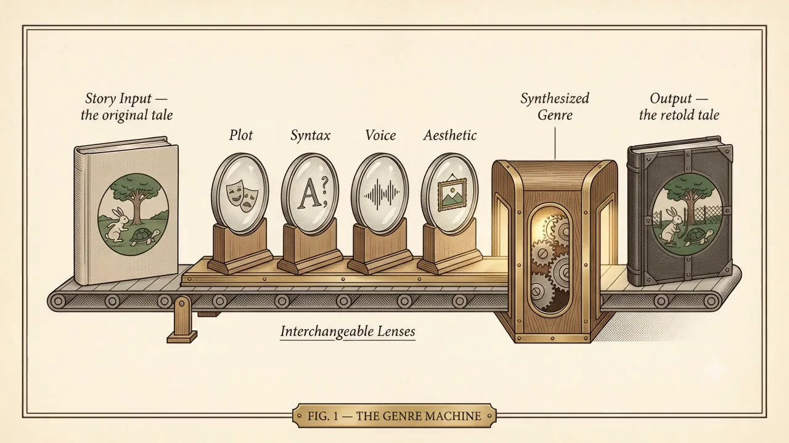

01Original Fairy TaleThe Three Little Pigsillustration not yet generated
Logline only — full text not yet written for this pairing
About this genre
Hallmarks
A little history
Three to try
The tale itself — then choose a lens below
Change the genre – change the story
• marks a pairing with full prose written.
Narration needs Voice Creator Pro on port 8100 and this page served over http
(browsers block file:// pages from calling local APIs).
THE GENRE MACHINE — MODEL I–IV • OWNER'S MANUAL
Theory of Operation

A single story goes in. Forty different stories come out. Nothing is added and nothing is removed — only the lens is changed. Here is how that works, and why it teaches.
§1 The Constant
Every machine needs a fixed point. Ours is the story. Load any of the four tales and its bones never move: the same characters want the same things, meet the same trouble, arrive at the same turn. The pigs still build; the wolf still comes. This is the part you already know by heart — and that is precisely the point.
§2 The Variable
Around that fixed story, everything else is a lens you can swap. This machine carries four: a Genre & Plot lens (the world the tale is reset in), a Syntax lens (how the sentences are built and the words chosen), a Voice lens (who narrates, and how they sound), and an Image lens (how the scene is drawn). Turn from Fairy Tale to Film Noir and not one plot point moves — yet the story becomes unrecognizable. What changed was never the what. It was the how.
§3 Why It Works
When the content is already familiar, your attention is freed to watch the craft. You are not spending effort on what happens — you know what happens — so you can finally see how a genre makes meaning: the clipped sentences of noir, the invocations of epic, the stage directions of drama, the case-file dread of the ergodic. The known story becomes a handrail.
§4 The Bridge
This is the whole design. New knowledge holds best when it is anchored to something you already own. The Genre Machine ties every new idea — a literary device, a genre convention, a register of voice — to a tale you have known since childhood. Old knowledge on one bank, new knowledge on the other, and the familiar story laid across the gap like a bridge you can actually walk.
§5 Operating Note
Read one tale in two very different genres, back to back, and ask the machine's central question: what survived the trip, and what did the lens replace? Everything that stayed is the story. Everything that changed is the genre — showing you, in plain sight, exactly how it works.
How to Use the Genre Machine
The same story, retold. Four fairy tales × forty genres. Change the genre — change the story.
The controls
Story strip (top): pick which tale the machine retells.
Genre grid (bottom): pick the genre. A green dot marks a pairing with full prose behind it.
▶ Narrate: hear the story read aloud in a voice designed for that genre — a noir gumshoe, a courtroom clerk, a mythic bard.
♪ Music: loop an instrumental theme matched to the genre. It layers under narration — use both, or either alone.
Español: switch the story text to Spanish. Narration stays in English — try reading along in one language while listening in the other.
About this genre (below the story): the genre's hallmarks, a short history, and three landmark books to try.
Shuffle: random story, random genre.
Keyboard
←→ change genre • ↑↓ change story • R shuffle
One suggestion
Read the same tale in two very different genres, back to back. Notice what survived the trip — and what the genre replaced. That difference is what genre is.
Lesson Plan: Genre Swap — One Tale, Forty Voices
Course: English I–II (adaptable for grades 8–12) • Time: two to three class periods • Materials: this site, a notebook, headphones if available.
Objective: Students analyze how genre conventions transform a familiar narrative — setting, narrator, diction, and stakes — and then compose an original genre transformation of their own, justifying their craft choices.
Sequence
Warm-up (10 min). Read the Original Fairy Tale together with narration on. As a class, list the story's fixed elements: three builders, three escalating structures, one threat, one reversal at the chimney.
Guided contrast (15 min). Switch to one dramatic transformation (Film Noir works well). Annotate together: who is narrating now? What is the wolf? What happened to the sentences? Open About this genre and match what you found to the listed hallmarks.
Exploration (25 min). In pairs, students choose three genres and complete a comparison matrix: setting / narrator & voice / what the wolf is / how the ending lands / three examples of genre-typical diction. Music and narration toggles encouraged.
Discussion (15 min). Which story elements are the tale's brick — they survive every genre — and which are its straw, the first things each genre blows away?
Composition (1–2 periods). Each student rewrites a different fairy tale (150–200 words) in a genre of their choice, using that genre's hallmarks, then adds a three-sentence craft note citing two diction choices and one structural choice they made on purpose.
Extension. Students record their own narration in a designed voice; emergent bilingual students can draft in Spanish or compare the Español text against the English side by side.
Assessment
Comparison matrix complete for three genres with textual examples.
Retelling demonstrates at least four hallmarks of the chosen genre.
Craft note cites specific diction with the effect it creates.
TEKS alignment — English I (19 TAC §110.36) / English II (§110.37)
TEKS
Standard (abridged)
Where it lives in the lesson
(b)(1)
Oral language: engage in meaningful discourse
Paired exploration; brick-vs-straw discussion
(b)(5)(C)
Use text evidence and commentary to support responses
Comparison matrix; craft note
(b)(6)(A)
Analyze how themes develop through characterization and plot
Fixed-elements list; matrix
(b)(6)(D)
Analyze how setting influences theme
Setting row of the matrix
(b)(7)
Analyze genre-specific characteristics, structures, and purposes
The whole machine; hallmarks panels
(b)(8)(D)
Analyze how the author's language achieves specific purposes
Guided annotation
(b)(8)(F)
Analyze how diction and syntax contribute to mood, voice, and tone
Diction examples; craft note
(b)(10)(A)
Compose literary texts using genre characteristics and craft
The genre-swap retelling
English II (§110.37) mirrors these strand numbers at greater text complexity. For grade 8, the parallel standards live in §110.24.